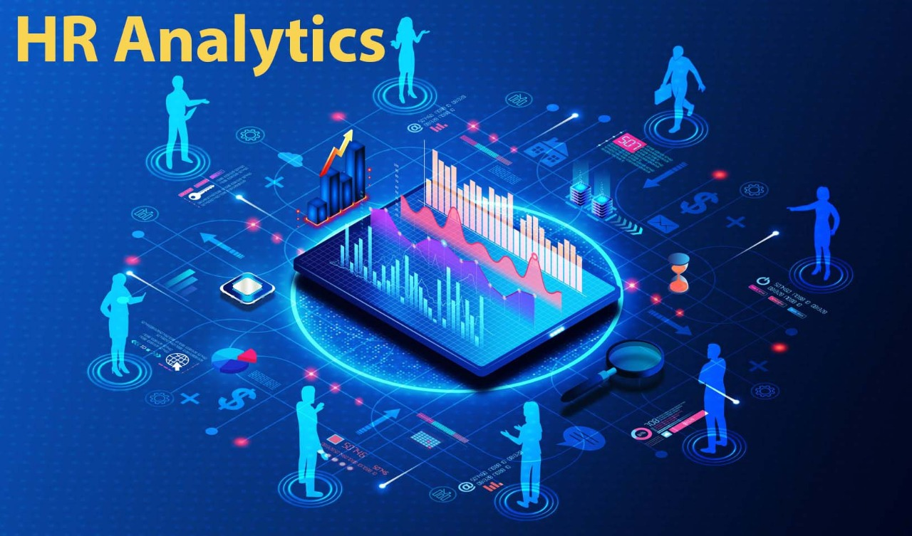

HR Analytics
HR analytics, also known as people analytics, talent analytics, or workforce analytics, is a data-driven approach to managing human resources within an organization. It involves systematically gathering, analyzing, and interpreting HR data to gain insights into workforce trends and behaviors. By leveraging data analysis, HR analytics aims to improve HR processes, optimize workforce performance, and ultimately contribute to better business outcomes. .
